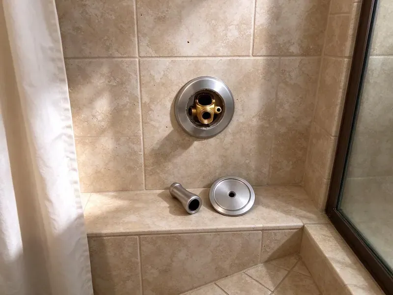

Urinal Installation in Concord, NH
We build urinal rough-ins to the spec sheet on restroom jobs across Concord, NH.
- Fast Commercial Scheduling
- Local Concord Plumbers
- ADA Height Installs
- Waterless Urinal Installs

Book a Urinal Install in Concord, NH This Week
You get a written price up front and a tested fixture when we leave.
Your Local Urinal Installer in Concord, NH
Home urinals are more common than people expect. Garage bathrooms and basement bars get them most, and the plumbing is the same as commercial work on a smaller scale, with a 2 inch drain, a vent and a compact flush valve. Water use stays low. Sensor valves are an option.
Some of what we do:
- Rebuild flush valves with inside parts kits
- Install home urinals for basement bars
- Set floor-mounted carriers for wall-hung urinals

Additional Bathroom Plumbing Services in Concord, NH
From toilets to showers, our bathroom plumbing team in Concord, NH repairs, installs, and replaces every fixture with clean, code-compliant work.


Customers
Why Choose FVR Plumbing for Urinal Installation in Concord, NH?
Clean, odor-free restrooms start with the install. Level bowls, seated gaskets and correctly set flush volumes keep splashing, odor and stains down. We run repeated flushes before we go.
- Code Compliance, Trap size, venting and fixture height all meet code in New Hampshire.
- Durable Setup, New gaskets, stainless bolts and correct outlet seals on every install.
- Durability, Floor-mounted carriers hold the fixture solid for years.
Citywide Coverage
Homes across Concord are covered too. Home urinal installs get the same licensed crews and permits, scheduled around you. A single day usually covers it.
Experienced Team
Every urinal job has a licensed plumber on it. Helpers can carry fixtures and clean up, but a licensed plumber sets the carrier, makes the drain and supply connections and signs off on the final test. That rule does not bend.
Safety-First Approach
Surfaces around the urinal matter for hygiene. Codes often call for nonabsorbent walls and floors near a urinal, and we flag surfaces that will not hold up. Fixes happen before the set.
Trusted Certified Concord Plumbing Services Professionals
At FVR Plumbing, we take pride in licensed, certified plumbing services throughout Concord, NH. Credentials matter in this trade. Every repair, install and maintenance visit follows strict safety and quality rules, and the plumbers doing the work carry recognized industry credentials.
Call Us Now PHCC Plumbing Contractor Recognition
PHCC Plumbing Contractor Recognition Better Business Bureau (BBB) Accreditation
Better Business Bureau (BBB) Accreditation Angi Certified Pro
Angi Certified Pro ISO 9001 Quality Management Certification
ISO 9001 Quality Management CertificationUrinal Installation Work in Concord, NH
ADA Urinal Installation in Concord
Accessible urinals start at the carrier. We set the carrier so the finished rim lands at 17 inches or lower, keep the clear floor space free of partitions and door swings, and mount the flush handle or sensor where a seated user can reach it. We measure the rim twice. Inspectors measure too.

Rough-In Plumbing for Urinals in Concord, NH
Rough-in decides whether the finish goes smoothly. The carrier, 2 inch waste, 3/4 inch supply and vent all go in to the spec sheet before drywall. The rough gets inspected before cover. Then the walls close.
Sloan Flush Valve Installation in Concord, NH
Sloan Royal valves are on most commercial urinals we see. Each Sloan Royal gets the right inside parts for the bowl, a tuned control stop and a rebuild kit on hand. Optima sensor valves fit the same spud. Battery models need no wiring.
Waterless Urinal Installation in Concord
Waterless urinals save the most water and need the most discipline. A cartridge or sealing liquid blocks sewer gas while letting urine through, and it must be replaced on schedule. Your custodial team needs training. We show them how.
Residential Urinal Installation in Concord, NH
Basement and garage bathrooms are where most home urinals go. A 2 inch drain, a vent tie-in and a supply sized to the valve go in, with blocking or a compact carrier. Ultra-low-flow models are popular. That barely touches the water bill.
Flush Valve Urinal Installation in Concord, NH
Flush valve urinals are the commercial standard. A flushometer from Sloan or Zurn delivers a measured volume from a 3/4 inch supply with no tank, and it recovers instantly for the next user, which matters in a stadium or school restroom. The volume matches the fixture rating. Wrong settings stain bowls.
Waterless Cartridge Urinals in Concord
Each waterless brand uses its own cartridge. Falcon, Waterless Co, Kohler and Zurn units all trap odor differently, and the cartridge or sealing liquid has to be replaced after a set number of uses, which in a busy restroom can mean every few months. We set up a schedule with you. Spare cartridges should stay on site.

Urinal Brands We Install in Concord, NH
Brand choice is mostly about parts support. We recommend brands whose valves and cartridges are easy to get locally, so repairs never wait. We install all of them. Spec sheets come first.
Finding Urinal Installation Near Me in Concord, NH
Business hours are respected. We schedule urinal installs before opening, after closing or on weekends when your restroom is not needed, and we give you a firm start time instead of a vague window. A real person picks up. The number is (844) 442-1569.
Property managers use us across their buildings. We track the fixture and valve in each restroom, so repeat visits are quick and parts are right. Ask about service agreements.
FVR Plumbing at a Glance
- Licensed and insured plumbers serving Concord, NH
- 24/7 emergency service with same-day scheduling
- Upfront, flat-rate pricing before work begins
- 4.9-star rated by 840+ New Hampshire customers
Concord Map
Concord Information
- Population
- 44,629
- Area codes
- Local
- Service area
- Concord and towns within a 40 mile drive
- Nearby
- Manchester, Laconia, Derry, Londonderry
Switching to a high-efficiency urinal in Concord, NH saves a lot of water in any restroom that sees steady traffic.
Expert Services
Reach out to FVR Plumbing for honest, reliable plumbing from people who know the trade in Concord, NH.
Our Specialized Plumbing Services in Concord, NH
At FVR Plumbing, we handle the full list of plumbing services across Concord, NH. We go from leak detection all the way to full system installations, for homes and commercial buildings, and we do it quickly at a fair price. Take a look at our core services below:


Our Urinal Installation Process in Concord, NH
This is what to expect when we set a new urinal in Concord.
Request a Quote
Call (844) 442-1569 and describe the restroom. You get a flat price.
Prep the Wall
We remove the old fixture and check the carrier, flange and supply.
Install and Test
The new urinal goes on, the valve gets tuned, and we test every connection.
Frequently Asked Questions About Urinal Installation in Concord
Most urinal installs run $400 to $1,500. A waterless or flush valve unit set on an existing carrier with good lines sits near the low end, while a commercial job that needs new drain, vent or supply work lands closer to the top. The price is set before work starts.
Only if you are comfortable with drain and vent work. Carrier setting, outlet sealing and valve tuning trip up DIY installs, and permits often require a licensed plumber. A quote costs nothing.
For new fixtures, almost always. New urinals usually need a permit and two inspections, but same-line replacements often do not. We check before quoting.
Every install, in writing. The labor warranty is printed on your invoice and covers leaks or loose mounting from our work, while American Standard, Kohler, Sloan and Zurn cover their own fixtures and valves. Callbacks under warranty are free.
Hairline cracks and permanent stains. Cracks leak, etched glaze stays stained, and old high-flow bowls waste water. A fixture that moves is a warning too.
Water, and upkeep. Flush units rinse with water from a valve, and waterless units rely on a cartridge that needs regular replacement. The waterless type uses none at all.
Cracks in the china are the clearest sign. Watch for permanent stains, constant odor, a loose fixture or an old high-flow rating. Upgrading an old bowl saves money.
Yes, and it is more common than you might think. Most cities allow residential urinals as long as they have a proper drain, trap and vent, and garage or basement bathrooms are the most popular spots because the drain is often close by. Your city may want a permit.
What People Are Saying About Our Plumbing Experts?

Lisa C.
Water was pouring out from under the washing machine on a holiday weekend. FVR Plumbing talked me through closing the valves over the phone and had a plumber at the house within ninety minutes. It was a burst fill hose.
Emergency Plumbing · Rochester, NHRachel N.
Hard water was leaving white crust on every faucet and our dishwasher was struggling. The tech tested the water, recommended a softener sized for a family of five, and installed it with a bypass valve in one afternoon. The spots on our glasses are gone.
Water Softener · Laconia, NH
Paul B.
Our pit pump ran nonstop even in dry weather. The plumber found the check valve was stuck open, so the same water kept cycling back into the pit. New valve, new float switch, done in an hour. It runs quiet now.
Sump Pump · Concord, NHGreg S.
I manage a small strip center with six tenants. FVR Plumbing handles our annual backflow testing and fixed a recurring clog in the shared sewer line that had been backing into the nail salon. Their reports come in clean and on time.
Commercial Plumbing · Concord, NH
Kevin O.
Before buying our house I paid for a sewer camera inspection. FVR Plumbing found a belly in the line that held standing water about forty feet from the cleanout. We used the video to get the sellers to fix it before closing.
Sewer Camera Inspection · Londonderry, NHBrian W.
I smelled gas behind the dryer and called right away. The plumber found a corroded flex connector, replaced it, and pressure tested the whole line before turning the gas back on. He let me watch the gauge hold steady for fifteen minutes.
Gas Line Repair · Rochester, NH